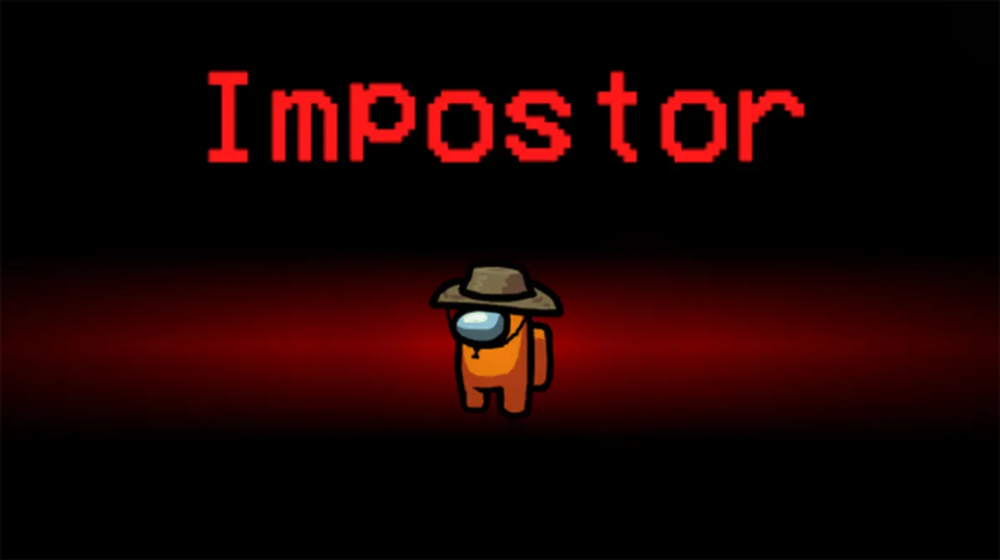
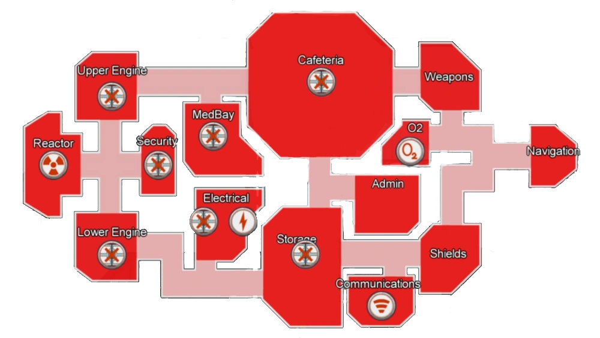

Sou impostor e agora?
Quando finalmente conseguir ser "O Impostor" é fundamental manter a calma, pensar em cada jogada antes de executá-la.
Tenha em mente uma "Histórinha" que irá explicar seus motivos para estar nos lugares, e mantenha-a coesa do começo ao fim.
Como impostor existem vários meios de distrair os tripulantes, tanto para poder executar sem ser percebido, como para atrasar as "Tasks".
Portanto, esquecer de fechar portas ou fazer sabotagens é o mesmo que condenar a própria derrota.
Porém, no entanto, claro, se esses recursos forem utilizados de maneira ineficiente, será difícil alcançar a vitória.
Por isso é necessário manter uma estratégia para poder equilibrar o uso desses recursos.
Cada mapa tem seus pontos de sabotagem, e cada ponto tem suas peculiaridades, ou seja, é necessário manter uma mente atenta para saber qual rumo sua estratégia deve tomar.
Se você, como impostor, seguir todas as dicas encontradas aqui, sua probabilidade de vitória irá aumentar consideravelmente. Dito isso, boa sorte, impostor.